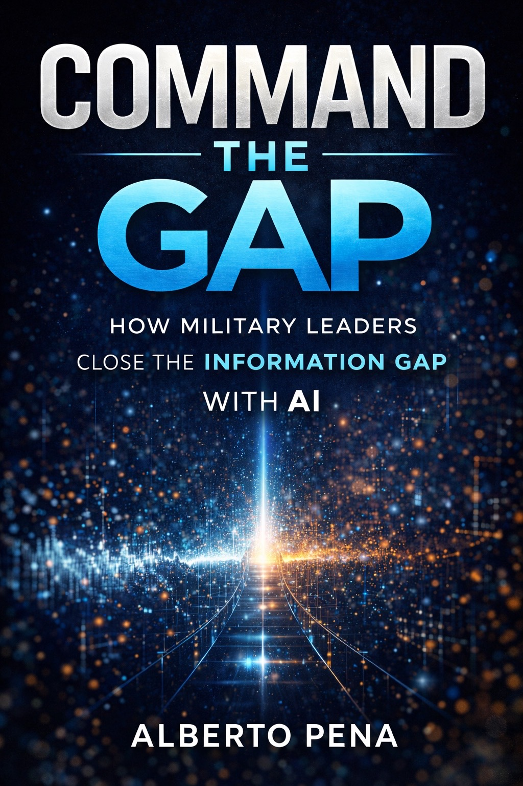

Resources
Practical frameworks, AI prompts, leadership tools, and insights drawn from twenty years of operational leadership and organizational consulting. Free to use. Built to produce results.

How Military Leaders Close the Information Gap with AI
Written for leaders who want to stay ahead — not just survive — in an AI-enabled environment. Command the Gap breaks down how military leaders can use artificial intelligence to develop their people faster, make better decisions under pressure, and build organizations that do not just react to change but lead it.
This is not a technology book. It is a leadership book about technology. Every insight is grounded in operational experience and built for leaders who need to understand AI well enough to direct it — not just talk about it.
Get the Book on AmazonWhy leaders in every sector are falling behind — and what the gap between available information and actionable intelligence actually costs organizations.
How military leaders can integrate AI into decision-making, planning, and people development without losing the human element that makes leadership work.
Practical frameworks for using AI in real operational contexts — from leader development and training to mission planning and organizational communication.
What the next generation of military and organizational leaders must understand, develop, and embody to lead effectively in an AI-enabled world.
Free Tool
Use this AI prompt to build a detailed leadership persona that captures your command style, your strengths, your development areas, and the context in which you lead. Paste it into any AI assistant to get personalized leadership development recommendations.
"I want you to help me build a leadership development plan. Here is my leadership profile: I have [X years] of leadership experience. My primary leadership context is [military unit / corporate team / nonprofit / government agency]. My rank or title is [your rank or title]. My key strengths as a leader are [list 2-3 strengths]. My primary development areas are [list 2-3 gaps or challenges]. My organization is currently [describe a key challenge or transition]. My leadership philosophy is [describe your approach in 1-2 sentences]. Based on this profile, build a 90-day leadership development plan with specific actions, resources, and milestones I can execute immediately."
HOW TO USE
Free Prompts
Six ready-to-use AI prompts drawn from real leadership and consulting work. Copy any prompt, customize the brackets, and use it with any AI assistant to get results you can act on immediately.
Tool Library
A curated library of tools, platforms, and resources across eight categories. Built for leaders who want practical capability, not just awareness.
Anthropic's AI assistant. Excellent for drafting communications, analyzing documents, and building leadership frameworks. Strong reasoning capability.
OpenAI's conversational AI. Strong for drafting, editing, and repurposing written content. Good for generating multiple versions of a message quickly.
Real-time writing assistant for grammar, clarity, and tone. Useful for polishing leadership communications, reports, and emails before distribution.
AI-powered meeting transcription and summary tool. Captures key decisions and action items from leadership meetings automatically.
AI-powered research tool with real-time web access. Excellent for leadership research, competitive intelligence, and policy analysis with cited sources.
AI integrated into Microsoft 365. Analyzes data in Excel, summarizes documents in Word, and drafts presentations in PowerPoint using your own data.
Build and distribute team assessments, culture surveys, and after-action review instruments. Useful for collecting honest feedback at scale.
Free data visualization platform. Turn performance data, survey results, and organizational metrics into clear visual dashboards for leadership briefings.
All-in-one workspace for notes, project management, and knowledge bases. Excellent for building leadership development trackers and team wikis.
Task and project management platform. Useful for tracking consulting engagements, team initiatives, and organizational transformation milestones.
Automated scheduling tool. Eliminates back-and-forth when booking coaching sessions, discovery calls, and leadership interviews.
AI calendar assistant that protects focus time and schedules tasks automatically. Valuable for senior leaders managing high operational tempo.
Gallup's strengths assessment. Identifies top talent themes for individual leaders and teams. Strong foundation for personalized development plans.
Employee engagement and 360-degree feedback platform. Provides structured data on leadership effectiveness, culture health, and team performance.
Professional coaching platform connecting leaders with certified coaches. Useful for organizations scaling coaching beyond the executive level.
On-demand leadership development content from Harvard Business School. Covers decision-making, strategy, communication, and managing people.
Best for nuanced reasoning, document analysis, and extended leadership frameworks. Strong on ethics, safety, and complex multi-step tasks.
Highly capable across a broad range of tasks. Strong for content generation, coding assistance, and plugin-enabled workflows.
Google's AI model with strong multimodal capability. Integrates well with Google Workspace for leaders already in the Google ecosystem.
AI-powered presentation builder. Converts written content into polished slide decks in minutes. Useful for briefings, proposals, and training materials.
Online learning platform with courses and certifications from top universities. AI, leadership, and strategy courses available. Eligible for Army COOL funding.
Certified AI Professional credential. Recognized by Army COOL and available through Coursera Plus. Strong alignment with consulting and AI advisory work.
Professional development library covering leadership, technology, communication, and business. Certificates shareable directly to LinkedIn profiles.
Army Credentialing Opportunities On-Line. Maps military experience to civilian certifications and identifies funding opportunities for professional credentialing.
Futuris Nova's own veteran career platform — currently in development. AI-driven military-to-civilian translation and career intelligence system.
Free career coaching and job placement services for transitioning veterans and military spouses. Strong track record with senior NCOs and officers.
Army's education benefits management system. Covers tuition assistance for degree programs and select professional certifications for active duty Soldiers.
Mentorship program connecting veterans with professionals from America's leading companies. Free for veterans. Strong network for senior leaders in transition.
Online whiteboard for strategic planning workshops, org design sessions, and facilitated team alignment. Excellent for virtual and hybrid leadership engagements.
Performance management platform with OKR tracking, 1-on-1 templates, and engagement surveys. Useful for connecting individual performance to organizational goals.
Strategy execution platform that connects organizational goals to team and individual actions. Strong for organizations that struggle to execute what they plan.
AI-assisted SWOT and competitive analysis tool. Useful for quickly generating situational assessments before strategy sessions and leadership workshops.
Insights
Practical thinking on leadership, organizational performance, and AI adoption — drawn from the work, not from theory.
Rank gives you authority. It does not give you influence. The leaders who consistently produce results are the ones who understand the difference — and invest in building both. Authority commands compliance. Influence commands commitment. Only one of those builds an organization that performs when you are not in the room.
Most organizations approach AI adoption backwards. They invest in tools before investing in readiness. They expect AI to fix problems that are fundamentally leadership and culture problems. The organizations that succeed with AI are the ones that treat it as a leadership challenge first and a technology challenge second.
Every leader talks about the culture they want to build. But culture is not built in what you reward. It is built in what you tolerate. The gap between the standards you proclaim and the behaviors you accept is exactly the size of your culture problem. Close that gap first.
Most leadership training produces knowledge, not capability. There is a significant difference. Capability is what a leader can do under pressure, in ambiguous conditions, with incomplete information. You cannot build that in a classroom. You build it through deliberate practice, honest feedback, and accountability to outcomes over time.
The leaders who struggle with AI are not the ones who do not understand the technology. They are the ones whose value was always tied to information access rather than judgment. AI democratizes information. What it cannot replace is the human capacity to make wise decisions, build trust, and lead people through uncertainty.
Most strategic plans are sound. Most execution is not. The gap is almost always in the translation — the moment when a well-designed plan meets the friction of real operations, real people, and real constraints. Bridging that gap requires leaders who understand both the strategy and the ground truth of what their organizations can actually do.
The information on this website is for general informational purposes only. Futuris Nova LLC makes no representations or warranties regarding accuracy, completeness, or reliability.
Nothing on this website constitutes legal, financial, military, medical, or professional advice. The views expressed do not represent the United States Army, the Department of Defense, or any government agency.
Examples are not guarantees of results. Individual and organizational outcomes vary. Futuris Nova LLC does not guarantee specific outcomes from any engagement, workshop, coaching program, or publication.
All content, frameworks, methodologies, and materials are the intellectual property of Futuris Nova LLC and Alberto Pena. Unauthorized reproduction or distribution is prohibited without express written permission.
Governing Law: This website and all services are governed by the laws of the State of California. Disputes shall be resolved through binding arbitration in California.
Military Disclaimer: Opinions and frameworks presented by Alberto Pena do not represent official positions of the United States Army, the Department of Defense, or any branch of the U.S. Armed Forces.